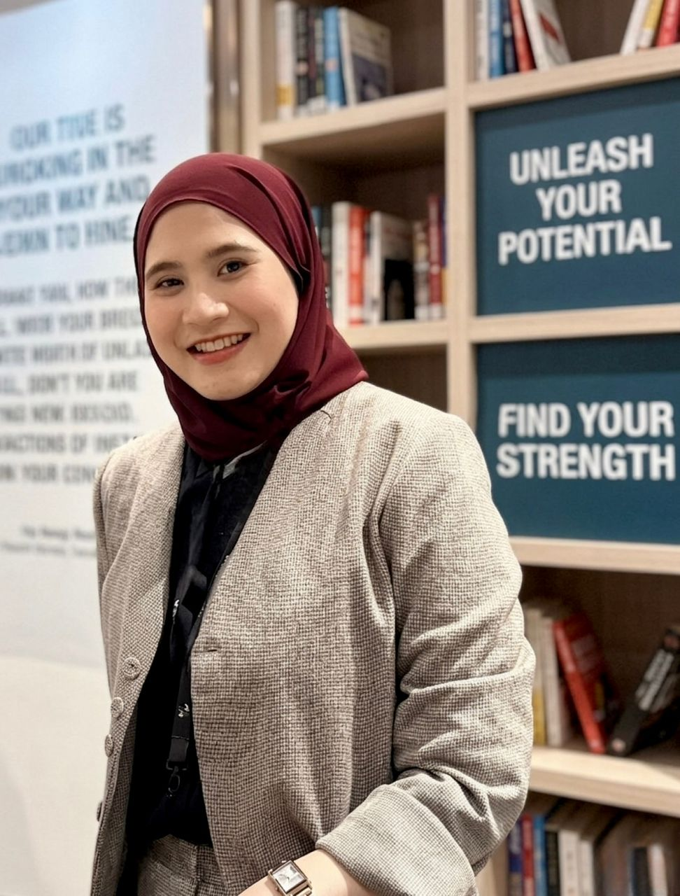

Building people. Developing skills. Creating opportunities.
I work across Learning & Development, TVET, programme development and strategic partnerships — turning learning initiatives into meaningful opportunities for people and organisations.
Based in Kuala Lumpur, Malaysia
People & Programme DevelopmentA people-first approach to learning.
A Psychology graduate from Universiti Pendidikan Sultan Idris with a professional focus on developing people, programmes and pathways into employment.

My work sits at the intersection of people development, skills training and programme management. I enjoy turning ideas into structured programmes, coordinating stakeholders and creating learning experiences that connect training with real-world outcomes.
What I do
From programme design to partnerships, I work across the full learning and development cycle.
Learning & Development
TVET Programme Development
Training & Programme Management
Industry Partnerships
Community & Talent Development
Work that moves beyond the classroom.
Professional journey
UOA Academy · Learning & Development / Programme & Partnership Work
Managing learning programmes, TVET initiatives, industry partnerships, stakeholder coordination, reporting, programme administration and skills-to-employment pathways.
Programme, Administration & Coordination
Experience supporting projects, stakeholders and operational workflows, building a foundation for work in people development and programme management.
Turning ideas into initiatives.
Selected work across TVET, alumni engagement, community development and learning.
Elderly Care Skills Programme
Developing and coordinating a skills-to-employment pathway combining theory, practical training and industry placement.
URNext Alumni Community
Building an alumni engagement platform connecting graduates with opportunities, initiatives, training and career development.
Industry & Strategic Partnerships
Coordinating collaborations across industry, government agencies, sponsors and community stakeholders.
Training & Career Readiness
Supporting learning initiatives that strengthen employability, mindset and workplace readiness.
Where it started.
Universiti Pendidikan Sultan Idris
Bachelor of Psychology (Honours)
CGPA 3.89
Royal Education Award
Anugerah Pelajaran DiRaja — Pingat Jaya Cemerlang
UPSI Convocation 2024
Perdana Fellow
Felo Perdana 2022 under the Ministry of Education
SSEAYP 2023
Participant in the Ship for Southeast Asian and Japanese Youth Programme
Let's build something meaningful.
Open to conversations around Learning & Development, TVET, talent development, programme partnerships and meaningful collaborations.